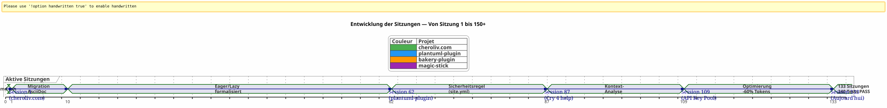
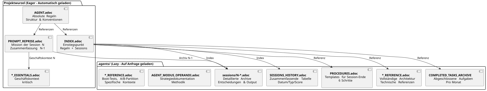

Einen KI-Agenten mit AsciiDoc steuern: Meine Eager/Lazy-Strategie für Opencode-Sessions ohne Kontextverlust
Veröffentlicht am 24 April 2026
Zusammenfassung
Wenn man mit einem KI-Agenten wie Opencode an komplexen Projekten über mehrere Sitzungen arbeitet, steht man vor einem grundlegenden Problem:Kontextverlust. Der Agent erinnert sich nicht an die vorherige Sitzung. Alles, was ihm erklärt wurde — Architektur, Konventionen, Zustand des Backlogs — ist verloren. Die Wiederherstellung dieses Kontexts bei jeder Sitzung ist kostenintensiv, langsam und fehleranfällig.
Dieser Artikel legt die handwerklich konstruierte Strategie dar, die ich zur Lösung dieses Problems entwickelt habe: ein beständiges Governance-System, basierend auf AsciiDoc-Dateien, mit einer Dichotomiebegierig/faulum den Verbrauch des Kontext-Tokens zu optimieren, und eineUnverzichtbare Sitzungsabschlussprozedurum die Kontinuität zu gewährleisten.
Die Szene: Montag, 21. April, 9:00
Ich öffne Opencode erneut, um mein Gradle-Plugin fortzusetzen.plantuml-plugin. Gestern Abend habe ich drei Stunden damit verbracht, mit dem Agenten der Architektur des API-Schlüsselpools zu diskutieren — Round-Robin-Rotation, Quotenverwaltung, automatisches Failover. Heute Morgen schaut mich der Agent mit Goldfischaugen an.
_ — Guten Tag, ich bin Ihr Opencode-Assistent. Wie kann ich Ihnen heute behilflich sein? _
Kein — Ach ja, der API-Schlüssel-Pool, wir waren bei der YAML-Struktur. Kein — Achtung,PlantumlManager`ist ein Singleton-Objekt in Kotlin, keine Klasse. Nicht — Nein, wir haben gestern beschlossen dass`SyntaxValidationResult`blieb eine sealed class nested in`PlantumlService.
Alles muss neu gemacht werden. Oder eher: Alles muss neu erklärt werden. Ich werde die ersten zwanzig Minuten meiner Sitzung damit verbringen, einen Kontext wiederherzustellen, den der Agent gestern bereits in den Händen hatte. Zwanzig Minuten verbrannter Tokens. Zwanzig Minuten, in denen ich programmieren könnte, aber in denen ich verpflichtende pädagogische Arbeit leiste.
Das ist kein Bug von Opencode. Es ist die eigentliche Natur konversationaler LLMs: zwischen zwei Sitzungen ist das Arbeitsgedächtnisvollständig gelöscht. Der Agent erinnert sich nicht an die vorherige Mission, an die getroffenen Entscheidungen, an die identifizierten Fallen, an den Code, den wir gemeinsam geschrieben haben.
Ich habe das Dutzend Mal erlebt. Bei vier Projekten gleichzeitig. Mit Sitzungen, die sich über Wochen aneinanderreihen. Ich habe ausgerechnet: im Durchschnitt,30 bis 40 % der Sitzungszeitwar der Rekontextualisierung des Agents gewidmet. In Sitzung 87 des Projekts`plantuml-plugin`, ich habe aufgegeben. Ich konnte mir nicht mehr leisten, das zum zehnten Mal zu erklären, dass`AttemptEntry`ist eine Top-Level-Datenklasse in`DiagramProcessor.kt`.
Ich brauchte ein System. Kein Hack. Eine echte Governance.
Die Genesis: Von Chaos zur Methode
Die ersten Sitzungen: Das Zeitalter der Dunkelheit
Mein erstes Projekt mit Opencode,plantuml-plugin, hat gestartet ohne jegliche Governance. Ich stelle eine Frage, der Agent antwortet, wir iterieren, die Sitzung endet, und am nächsten Tag fangen wir von vorne an. Es war Sitzung 1, dann 2, dann 3… bis zur Sitzung 62, wo ich erkenne, dass ich kumulierte Stunden damit verloren habe, die gleiche Architektur immer wieder zu erklären.
Bei Sitzung 62 sind die Zahlen da:198 Unit-Tests bestehen, 42 validierte Funktionstests, das Plugin funktioniert. Aber die kognitive Belastung ist unerträglich. Jede neue Sitzung beginnt mit einem zwanzigminütigen Monolog über die Projektstruktur.
Die Episode des site.yml zerstört (Sitzung 2, bakery-plugin)
Die Methode entsteht auch aus einer Katastrophe. Über das Projekt`bakery-gradle`, in der Sitzung 2, ich bitte den Agenten, die Datei zu ändern.site.yml. Der Agent, ohne zu überprüfen, ob die Datei versioniert ist, macht ein`Write`vollständig, das den Inhalt überschreibt. Ergebnis: Die echten Tokens (Firebase-API-Schlüssel, Deploy‑Secrets) werden durch gefälschte Platzhalter ersetzt. Die Datei war nicht im Git‑Repository — sie war in`.gitignore`um die Geheimnisse zu schützen.
Ohne Sicherung. Ohne`git restore`möglich. Ich bin blockiert. Ich muss die Konfigurationsdatei manuell wiederherstellen, die Tokens in meinen Passwort-Managern finden, alles wieder zusammenfügen.
Aus dieser Frustration entsteht dieAbsolute Regel 1b:
_ NIE zerdrückeneine Konfigurationsdatei mit einem`Write`vollständig wenn ein`Edit`teilweise reicht.NIE ERSETZENsensible Werte durch Dummywerte.Überprüfen git check-ignore und `git ls-filesvor jeder Änderung. _
Diese Regel ist heute in allen meinen Dateien eingemeißelt.AGENT.adoc et `INDEX.adoc`Bei vier Projekten ist sie aus einem realen Fehler entstanden, der mich eine Stunde manuelle Arbeit gekostet hat.
Die Migration Markdown → AsciiDoc (Sitzung 1, cheroliv.com)
Am 25. April 2026, auf`cheroliv.com`, ich treffe eine radikale Entscheidung: die gesamte Governance von Markdown auf AsciiDoc umzustellen. Das ist nicht ästhetisch. Es ist funktional. AsciiDoc bietet eine semantische Struktur, die LLMs besser lesen: hierarchische Abschnitte, typisierte Tabellen, Warnungen (NOTE, WARNING, CAUTION), maschinenlesbare Dokumentattribute.
Sitzung 1 von`cheroliv.com`Formalisiere die Struktur :
-
Konvertierung von`AGENTS.md` en
AGENT.adoc -
Erstellung der spezialisierten Agenten:`CODER.adoc`,
SCRUM_MASTER.adoc,PLANTUML_DESIGNER.adoc -
Erstellung der Eager/Lazy-Struktur:`INDEX.adoc`,
SESSIONS_HISTORY.adoc,AGENT_SESSION_MANAGER.adoc,SESSION_CHECKLIST.adoc,PROCEDURES.adoc
Nur ein Commit:`90975e9 refactor: migrate agent governance from Markdown to AsciiDoc`. Und die Seite läuft weiter.

Der Zeitstrahl oben zeigt den tatsächlichen Fortschritt. Der Wendepunkt ist die Sitzung 87: dort, wo die Frustration durch wiederholte Rekontextualisierung die Toleranzgrenze überschreitet, und die Eager/Lazy-Methode aufhört, nur eine Idee zu sein, und zur Pflicht wird.
Die Strategie: Eager/Lazy im Detail
Philosophie: Angewendeter Informatikkache für die Kognition
Mein Ansatz lässt sich direkt von der Computer-Cache-Verwaltung inspirieren. Alles, waskritisch und häufig verwendetmuss sofort zugänglich seinEifrig) Alles, was istkontextbezogen oder voluminösmuss auf Anfrage geladen werden (faul).
Eager (Dashboard) |
Faules (Bedienungsanleitung) |
Größe |
< 100 Zeilen, < 10k Tokens |
Unbegrenzt, detailliert |
Ladevorgang |
Auto, am Anfang der Sitzung |
Auf Anfrage des Agenten |
Inhalt |
Absolute Regeln, laufende Mission, kritischer Zustand |
Sitzungsarchive, vollständiger Verlauf, detaillierte Verfahren, technische Referenzen |
Rolle |
Den Agent sofort orientieren |
Beantworten Sie tiefgründige Kontextfragen |
Die Eager-Dateien : Das Dashboard
Diese Dateien leben im Stammverzeichnis jedes Projekts und werden automatisch vom Agenten am Anfang jeder Sitzung geladen. Sie bilden dasdashboard-- kritische Information, unmittelbar zugänglich.

AGENT.adoc-- Die Hauptdatei. Auf`cheroliv.com`, es sind 200 Zeilen und enthält :
-
Die absoluten Regeln des Projekts (kein Commit ohne Erlaubnis, kein`rm`ohne Bestätigung)
-
Die Struktur des Projekts und die Codekonventionen
-
Die essentiellen Befehle(
./gradlew serve,./gradlew test) -
Die Epics und das Product Backlog (priorisierte User Stories)
-
Quer-schnittliche Qualitätskriterien (Barrierefreiheit, Responsivität, Kompatibilität)
Auf`bakery-plugin`, die Regel 0 ist verschieden :./gradlew -q publishToMavenLocal` erforderlich nach jeder Änderung des Quellcodes. Weil das Testen des Plugins ohne erneutes Veröffentlichen des lokalen JARs mich eine Stunde gekostet hat, um einen Code zu debuggen, der noch nicht verpackt war.
PROMPT_REPRISE.adoc-- Die Aufgabe der laufenden Sitzung. Am Ende jeder Sitzung aktualisiert, enthält es:
-
Die Sitzungsnummer und die Prioritätsmission
-
Zusammenfassung der vorherigen Sitzung (was erledigt wurde, was noch zu tun bleibt)
-
Die Akzeptanzkriterien der aktuellen Sitzung
-
Spezifische technische Hinweise
.agents/INDEX.adocDer Einstiegspunkt. Er fasst die absoluten Regeln, die jüngsten Sitzungen und vor allem das.Projektportfoliogérés avec la même méthodologie. À ce jour, cinq projets y figurent : translates to:
mit der gleichen Methodologie verwaltet. Bis heute sind fünf Projekte darin aufgeführt:
----
----
----
| magic-stick | Session 23 | SCRIPT_VERIFICATION.adoc | 2026-04-27 |
| bakery-gradle | Session 11 | TEST_COVERAGE_ANALYSIS | 2026-04-27 |
| cheroliv.com | Session 9 | TEST_COVERAGE_ANALYSIS | 2026-04-27 |
| plantuml-gradle| Session 133| TEST_COVERAGE_ANALYSIS | 2026-04-23 |
| jhipster-gradle-plugins | Session 1 | TEST_COVERAGE_ANALYSIS | 2026-04-28 |
----
**`*_ESSENTIALS.adoc`** -- Ein kürzlich hinzugefügter Beitrag (Session 109, plantuml-plugin) zur weiteren Optimierung des Eager-Kontextes. Anstatt 200 Zeilen des Geschäfts-Kontexts im API-Schlüssel-Pool zu laden, lade ich 50 Zeilen des Wesentlichen und die übrigen 150 Zeilen bleiben im LAZY-Modus in`*_REFERENCE.adoc`.
Gemessenes Ergebnis: Übergang von**~25k tokens EAGER zu ~10k tokens**(Gewinn von 60%). Der Agent braucht keine energieintensiven Erinnerungen mehr.
==== Das fehlende Glied:`opencode.json
Ich muss Ihnen gestehen, dass ich fast vergessen hätte, es zu dokumentieren. Über allen diesen Dateien `.adoc` befindet sich eine winzige JSON-Datei, ohne die nichts funktioniert. Es heißt`opencode.json`und er ist sechs Zeilen lang. Wörtlich sechs Zeilen.
[source,json]
----
{
"$schema": "https://opencode.ai/config.json",
"instructions": [
"AGENT.adoc"
]
}
----
Diese Datei sagt Opencode: « Beim Start laden`AGENT.adoc` automatisch. » Ohne ihn ist der Agent ein leeres Blatt genau wie ich es zu Beginn des Artikels beschrieben habe. Mit ihm hat der Agent bereits die absoluten Regeln, die Projektarchitektur und die essentiellen Befehle in der Hand — bevor ich überhaupt Guten Tag gesagt habe.
Ich habe die Bedeutung dieser Datei zufällig entdeckt. Auf`bakery-plugin`, es existierte nicht. Ich fragte mich, warum der Agent auf diesem Projekt systematisch mehr « verloren » war als bei den anderen. Die absoluten Regeln waren gut in`AGENT.adoc`— aber`AGENT.adoc`war nie geladen. Der Agent las nur das, was ich ihm sagte zu lesen, manuell, bei jeder Sitzung. Es war die Sitzung 11 von`bakery-plugin`Als ich die Abwesenheit des bemerkte`opencode.json`. Ich habe es erstellt — und die Sitzung 12 begann wie die anderen.
Diese Datei ist für mich jetzt so offensichtlich, dass ich überhaupt nicht mehr daran denke. Ein klassischer Fehler eines Entwicklers, der sein Werkzeug zu gut kennt. Heute erstelle ich es systematisch *avant`AGENT.adoc`. Das ist der erste Stein.
==== Die Dualität von `INDEX.adoc
Eine weitere Subtilität, die es wert ist, ausdrücklich benannt zu werden:`INDEX.adoc`lebt in`.agents/`— Dieses Dokument habe ich als LAZY angegeben. Trotzdem führe ich es in all meinen Tabellen als EAGER auf. Hier besteht eine erkennbare Spannung.
Die Realität vor Ort: die Dateien`.agents/INDEX.adoc`werden automatisch zu Beginn der Sitzung gut geladen, ebenso wie`AGENT.adoc` et `PROMPT_REPRISE.adoc`. Sie sind in`.agents/`aus organisatorischen Gründen — nicht das Root-Verzeichnis bevölkern — aber ihr Verhalten ist EAGER
Auf`plantuml-plugin`, `INDEX.adoc`Es hat 200 Zeilen und enthält die absoluten Regeln *vollständig* mit ihrer Historie (die Lehren aus den vergangenen Sitzungen), die EPICs mit Punktzahlen, und das Projektportfolio. Das ist das Dokument, das der Agent konsultiert, um zu wissen « wo wir stehen ». Auf`bakery-plugin`, er hat 150 Zeilen mit der Roadmap und den neuesten Sitzungen
Die freiwillige Redundanz zwischen`AGENT.adoc` et `INDEX.adoc`kann überraschend sein. Absolute Regeln sind in beiden vorhanden. Warum? Weil sie zwei verschiedene Rollen erfüllen: in`AGENT.adoc`, sie sind *explicatives* (das Storytelling der Regel, die gelernte Lektion); in`INDEX.adoc`, sie sind *ausführend* (die nackte Regel, ohne Begründung, für eine schnelle Konsultation). Der Agent liest`AGENT.adoc`einmal zum Verstehen ; er liest es noch einmal`INDEX.adoc`zu jeder Sitzung für *anwenden*. Zwei Verwendungen, zwei Formate.
[plantuml, format=svg, id=diag-dualite-agent-index, alt="Comparaison entre AGENT.adoc (narratif) et INDEX.adoc (exécutif)"]
----
@startuml
skinparam backgroundColor #FEFEFE
skinparam defaultTextAlignment center
title Dualität AGENT.adoc ←→ INDEX.adoc
left to right direction
rectangle "AGENT.adoc\n(Wurzel — EAGER)" as AGENT #E3F2FD {
rectangle "�📖 **Narratives Format**\nDas Storytelling der Regel\ndie gelernte Lektion, der Kontext" as NARR
rectangle "🏗️ **Vollständige Architektur**\nProjektstruktur, Komponenten\nDetaillierter Backlog US" as ARCHI
rectangle "📋 **Erklärende Regeln**\nWarum existiert die Regel?\nVerlauf des Vorfalls" as EXPL
}
rectangle "INDEX.adoc\n(.agents/ — EAGER)" as INDEX #E8F5E9 {
rectangle "⚡ **Ausführendes Format**\nDie nackte Regel, ohne Begründung\nSchnelle Konsultation" as EXEC
rectangle "�📊 **Roadmap & EPICs**\nZusammenfassungstabelle\nFortschritt, Score, Priorität" as ROAD
rectangle "�🌐 **Projektportfolio**\nQueransicht\n5 synchronisierte Projekte" as PORT
}
AGENT --> INDEX : "Agent liest AGENT.adoc\n1 Mal zum **verstehen**"
INDEX --> AGENT : "Agent liest INDEX.adoc erneut\nfür jede Sitzung zum **anwenden**"
note bottom of AGENT
Taille max : 200 lignes
end note
note bottom of INDEX
Taille max : 200 lignes
Source de vérité en cas de divergence
end note
@enduml
----
Diese akzeptierte Redundanz ist eine Designentscheidung. Sie verbraucht etwa 50 zusätzliche Zeilen von EAGER‑Tokens — aber sie gewährleistet, dass der Agent stets die Regeln vor Augen hat, einschließlich im knappen Format, das sofortige Gehorsam erleichtert.
=== Die LAZY-Dateien: Das Handbuch des Eigentümers
Diese Dateien leben in`.agents/`und werden nur gelesen, wenn der Agent sie benötigt. Sie bilden den wahren Reichtum der Methode, denn sie sammeln das Projektwissen, ohne den aktuellen Kontext zu verunreinigen.
[plantuml, format=svg, id=diag-agents-tree, alt="Arborescence complète du dossier .agents/"]
----
@startuml
skinparam folderBackgroundColor #E3F2FD
skinparam folderBorderColor #1565C0
skinparam fileBackgroundColor #FFF3E0
skinparam fileBorderColor #EF6C00
folder ".agents/" as ROOT {
file "INDEX.adoc\n(EAGER -- 200 Zeilen)" as IDX #E8F5E9
file "AGENT_SESSION_MANAGER.adoc\n(Vorlagensitzung)" as ASM
file "SESSION_CHECKLIST.adoc\n(Wann ändern)" as CHK
file "PROCEDURES.adoc\n(6 Schritte + LAZY/EAGER)" as PRO
file "SESSIONS_HISTORY.adoc\n(Alle Sitzungen)" as HIS
folder "Sitzungen/" as SESS {
file "1-chore-migration.adoc" as S1
file "109-Formalisierung-lazy.adoc" as S109 #FFECB3
file "133-epic11-artikel.adoc" as S133
file "... +130 andere" as SMORE
}
folder "Archive/" as ARCH {
file "COMPLETED_TASKS_2026-04.adoc" as CTA
file "SESSIONS_HISTORY_83-95.adoc" as SHIST
folder "sessions_zusammenfassungen/" as SUM {
file "SESSION_64_SUMMARY.adoc" as SU64
file "SESSION_73_SUMMARY.adoc" as SU73
file "..." as SUMORE
}
folder "prompts_archive/" as PARCH {
file "PROMPT_REPRISE_S65.adoc" as PR65
file "PROMPT_REPRISE_S75.adoc" as PR75
file "..." as PMORE
}
}
}
IDX --> SESS : "indiziert"
IDX --> HIS : "indiziert"
IDX --> ARCH : "Referenz"
note right of S109
Session 109 =
Formalisation stratégie
LAZY/EAGER
Token : ~25k → ~10k
end note
@enduml
----
Die obige Baumstruktur zeigt die tatsächliche Ordnerstruktur`.agents/`auf`plantuml-plugin`, das reifste Projekt. Beachte die Tiefe in drei Schichten: Stammdateien (Metadaten), Ordner`sessions/`(chronologische Archive), und Akte`archives/`(Aggregationen und Zusammenfassungen). Diese Tiefe verwandelt die Governance einer einfachen TODO-Datei in eine**vollständiges organisatorisches Gedächtnis**.
**.agents/sitzungen/{N}-{titel}.adoc**Die detaillierten Aufzeichnungen jeder Sitzung. Derzeit:
* `plantuml-plugin` : **133 archivierte Sitzungen**(von der Sitzung 1 bis 133)
* `bakery-plugin`:**11 Sitzungen**
* `magic-stick` : **23 Sitzungen**
* `cheroliv.com`:**9 formelle Sitzungen**+ 7 Sitzungen vor dem System wurden rückwirkend rekonstruiert
Jedes Archiv enthält den vollständigen Kontext der Sitzung, die getroffenen Entscheidungen, die aufgetretenen Probleme und deren Lösung, die ausgeführten Befehle und ihre Ausgabe.
**.agents/SESSIONS_HISTORY.adoc**-- Eine Zusammenfassungstabelle aller Sitzungen mit einem Score. Beispiel auf`cheroliv.com` :
----
| -6 | 2025-05 | chore | Initialisation projet Gradle/JBake | 7/10 | 1 | 2026-04-25 | chore | Migration gouvernance agent | 8/10 | 7 | 2026-04-27 | debug/fix | Correction publishSite | 9/10 | 8 | 2026-04-27 | analyse | Analyse article 0108 | 7/10
**.agents/COMPLETED_TASKS_ARCHIVE_{mois}.adoc**Abgeschlossene Aufgaben werden monatlich archiviert, um den aktiven Backlog nicht zu überladen. Wenn eine User Story abgeschlossen ist, wird sie hierhin verschoben. Der Backlog bleibt übersichtlich: maximal 10 aktive Elemente.
**.agents/PROCEDURES.adoc**-- Detaillierte Vorlagen des Sitzungsende-Verfahrens. Lang, aber nur einmal vom Agenten gelesen, wenn er die Methode lernt. Dann wird das Verfahren mechanisch.
**.agents/AGENT_MODUS_OPERANDI.adoc**-- Die vollständige strategische Dokumentation. Auf`plantuml-plugin`, Diese Datei macht**900+ Zeilen**und er/sie heißt tatsächlich`AGENT_METHODOLOGIES.adoc`— Ich habe den Namen zwischen dem Schreiben dieses Artikels und der praktischen Implementierung geändert. Diese Art von Namensabweichung ist in einem sich entwickelnden handwerklichen System unvermeidlich. Wichtig ist die Namenskonvention: Wenn die Datei die *Methode* dokumentiert, beginnt sie mit`AGENT_`oder ein explizites Präfix. Es dokumentiert die Eager/Lazy-Methodik, die zu befolgenden Muster, die zu vermeidenden Anti-Muster. Es ist LAZY, weil ein Agent nicht die gesamte Strategie in jeder Sitzung nachlesen muss, nur wenn es Unklarheit gibt.
**`*_REFERENCE.adoc`** -- Die projektspezifischen technischen Referenzen. Auf`magic-stick`, zwei dichte LAZY Dateien:
* `AB_PARTITION_REFERENCE.adoc`(147 Zeilen) -- Architektur Partition A/B GPT, Skripte`update-system.sh`, geschätzte Größen, Rollback-Mechanismus
* `BOOT_TEST_REFERENCE.adoc`(144 Zeilen) -- Verfahren QEMU + VNC zum Testen des Boots der ISO ohne physische Hardware, Checkliste BIOS/UEFI, Einschränkungen CI/CD
Auf`plantuml-plugin`:
* `ARCHITECTURE.adoc`(134 Zeilen) -- Struktur der 11 Data-Klassen, Aufmerksamkeitspunkte (zu vermeidende Fallstricke), optimierte Testbefehle
* `API_KEY_POOL_REFERENCE.adoc`-- Vollständige Details des Schlüsselpools (LAZY während`ESSENTIALS`ist EAGER)
== Die Spezialagenten: Ein virtuelles Team
Die Governance beschränkt sich nicht auf passive Dateien. Ich habe formalisierte**Rollen spezialisierter Agenten**in dedizierten LAZY-Dateien, die den erwarteten Workflow je nach Aufgabentyp definieren.
|===
|Agent |Datei |Rolle |Projekt |**kodieren** |`CODER.adoc` |Implementierung FTL/CSS/JS, semantische Tags, Zugänglichkeitskriterien |cheroliv.com |**Scrum-Master** |`SCRUM_MASTER.adoc` |US-Planung, Aufteilung in Unteraufgaben, Erkennung der Abhängigkeiten |cheroliv.com |**PlantUML-Designer** |`PLANTUML_DESIGNER.adoc` |Erstellung von Diagrammen, PUML-Syntax, JBake-Integration |cheroliv.com
|===
Die Datei`CODER.adoc`auf`cheroliv.com`enthält konkrete Regeln: _einzige`<h1>`pro Seite_, _Pfade mit Präfix versehen`${content.rootpath}`_, _Die Sprache deklarieren`<html lang="${content.lang!"fr"}">`_. Diese Konventionen, einmal geschrieben, werden vom Agenten seit Sitzung 1 automatisch eingehalten.
Die Datei`SCRUM_MASTER.adoc`Vorgibt eine Lieferstruktur :**Ziel**, **Aufgaben**(Koordinaten mit Zuweisung)**Akzeptanzkriterien**, **Risiken**. Wenn ich einen Aktionsplan anfordere, erstellt der Agent diese Struktur, ohne dass ich sie verlangt habe. Die Governance**Programm**der Agent.
==== Wenn die Spezialagenten unverzichtbar werden
Die Erstellung der spezialisierten Agenten folgt einer natürlichen Kurve. Zu Beginn eines Projekts brauchen Sie sie nicht —`AGENT.adoc`reicht völlig aus. Aber wenn das Projekt wächst (sagen wir, über 20 Sitzungen), sollten zwei Signale Sie alarmieren:
1. Der Agent mischt die Konventionen zweier unterschiedlicher Bereiche (z.B. PlantUML-Syntax und CSS-Regeln)
2. Du verbringst mehr Zeit damit, den Agenten wegen Konventionen zu korrigieren, die du ihm bereits fünfmal erklärt hast.
Auf`cheroliv.com`, es ist in der Sitzung passiert... 1. Ja, von Anfang an. Weil dieses Projekt eine Website mit drei Sprachen (FTL, CSS, JS) ist, AsciiDoc-Inhalt und PlantUML-Diagramme enthält — drei Bereiche, die nichts gemeinsam haben. Der Agent CODER muss die Schriftgrößen und Media Queries kennen; der Agent PLANTUML_DESIGNER muss die Syntax kennen.`@startuml`. Ohne Trennung bot mir der CODER-Agent Diagramme an, und umgekehrt. Das Chaos.
auf`jhipster-gradle-plugins`, ich habe zwei spezialisierte Agenten für die Entwicklung von Gradle-Plugins erstellt:`PLUGIN_DEVELOPER.adoc` et `BACKLOG_MANAGER.adoc`. Der erste kodiert alle Kotlin/Gradle-Konventionen (keine`!!`, Datenklassen für die Modelle,`@TaskAction`pour die Aufgaben). Der Zweite weiß, dass`persistence`muss stabil sein bevor`assistant`startet seine Entwicklung nicht — eine kritische Abhängigkeit in einem Monorepo.
Der Fehler, den man nicht machen sollte: zu viele Agenten zu früh erstellen.`plantuml-plugin`hat die Session 108 abgewartet, bevor ein spezialisierter Agent für den Pool von API-Schlüsseln formalisiert wurde. Bis dahin lag der fachliche Kontext in`AGENT.adoc`. Die Faustregel: Ein spezialisierter Agent ist gerechtfertigt, wenn sein Fachgebiet mehr als 100 Dokumentationszeilen umfasst.
==== Die Namenskonvention der Sitzungen
Ein Detail, das trivial erscheint, aber kritisch wird, wenn man 100 Sitzungen erreicht hat. Wie sollen die Archivdateien benannt werden?
Ich habe auf die harte Tour gelernt, dass eine Konvention notwendig ist — vier Projekte, vier unterschiedliche Formate zu Beginn, und ich habe den Überblick verloren. Heute ist die Konvention, die ich festgelegt habe, :
----
{N}-{type}-{sujet-kebab-case}.adoc
Konkrete Beispiele:
* `1-chore-migration-gouvernance-agent.adoc`— Sitzung 1, Typ Aufgabe
* `10-solidification-tests.adoc`— Sitzung 10, ohne expliziten Typ (das Subjekt reicht aus)
* `036-debug-graphify-symlink-epic9.adoc`— Sitzung 36 mit dreistelliger Nummer für die Sortierung
Die Sitzungsnummer ist das Hauptkriterium für die Sortierung. Projekte, die Nummern mit drei Stellen (001, 036, 133) verwenden, vermeiden Probleme bei der lexikografischen Sortierung, wenn man über 99 hinausgeht. Das ist, was ich jetzt auf`magic-stick``001-init-projet.adoc`, `036-debug-graphify-symlink-epic9.adoc`.
Der Typ ist optional und wird aus den Session-Schlüsselwörtern abgeleitet (debug, feature, refactor, docs, chore, test). Der Betreff im kebab-case ist der wichtigste Teil: Er muss es ermöglichen, eine Sitzung ohne Öffnen der Datei wiederzufinden. Wenn du dich fragst, welche Sitzung das war, in der wir den Timeout der Integrations-Tests behoben haben, lautet die Antwort`124-fix-timeout-integration-test.adoc`.
Für die historisch rekonstruierten Sitzungen (Projekte, die vor der Governance entstanden sind), verwende ich negative Zahlen. Auf`cheroliv.com`, die Sitzungen -6 bis 0 decken die gesamte Vor-Governance-Geschichte des Projekts ab. Und für die Sitzungen « nicht dokumentiert » oder verloren, erstelle ich einen Eintrag in`SESSIONS_HISTORY.adoc`Ohne entsprechendes Archiv, mit einer Punktzahl`?`. Es ist ehrlicher als vorzutäuschen.
[plantuml, format=svg, id=diag-naming-convention, alt="Arbre de décision pour le nommage des fichiers de session"]
----
@startuml
skinparam backgroundColor #FEFEFE
skinparam defaultTextAlignment center
skinparam wrapWidth 200
title Namenskonvention für Sitzungen
start
:Une session se termine;
note right: Trigger "Ende der Sitzung"
if (Session antérieure\nà la gouvernance ?) then (oui)
:Numéro **NÉGATIF**\n-6, -5 ... 0;
note right: Historique\nreconstitué
:Suffixe : reconstitution;
else (non)
:Numéro **POSITIF**\nsur 3 chiffres si > 99;
note right: 001, 036, 133\npour le tri lexicographique
:Détecter le **TYPE**;
if (Mots-clés trouvés ?) then (oui)
:debug / feature / refactor\ndocs / chore / test;
else (non)
:Omettre le type\n(le sujet suffit);
endif
:Formuler le **SUJET** en kebab-case;
note right
Ex: fix-timeout-integration-test
Doit permettre de retrouver
sans ouvrir le fichier
end note
endif
:Nom final : {N}-{type}-{sujet}.adoc;
note right
• 1-chore-migration-gouvernance.adoc
• 036-debug-graphify-symlink.adoc
• 124-fix-timeout-integration-test.adoc
• 133-epic11-article-blog-kg.adoc
end note
if (Session documentée ?) then (oui)
:Créer archive dans sessions/;
:Ajouter ligne SESSIONS_HISTORY\navec score X/10;
else (non)
:Ajouter ligne SESSIONS_HISTORY\navec score **?**\n**sans archive**;
note right: L'honnêteté\nplutôt que le vide
endif
stop
@enduml
----
==== TEST_COVERAGE_ANALYSIS.adoc` — Der Schritt 5 im Detail
Schritt 5 des Verfahrens zur Sitzungsbeendigung ist das Geheimnisvollste. Sie sagt « Aktualisieren`TEST_COVERAGE_ANALYSIS.adoc`Wenn Tests hinzugefügt oder geändert wurden. » Wie sieht diese Datei aus?
auf`plantuml-plugin`, er hat sich von einigen Zeilen zu einer vollständigen Struktur entwickelt. Hier ist seine stabile Form :
[source]
----
= Analyse de Couverture de Tests
== Suivi des Tests
|===
| Classe de test | Type | Tests | Statut | Dernière MAJ
| PlantumlServiceTest | unit | 45/45 | ✅ PASS | 2026-04-23
| ApiKeyPoolTest | integration | 15/15 | ✅ PASS | 2026-04-20
|===
== Historique par Session
| Session | Tests ajoutés | Tests modifiés | Couverture
| 133 | 0 | 2 | 100%
| 132 | 5 | 0 | 100%
|===
----
Das Interesse liegt nicht in der Datei selbst — es besteht darin, *zu notieren*, was sich geändert hat. Ohne diesen Schritt wissen Sie nach 50 Sitzungen nicht mehr, welche Tests was abdecken. Der Agent weiß es auch nicht. Die Datei wird zur einzigen Quelle der Wahrheit über die Testabdeckung des Projekts.
[plantuml, format=svg, id=diag-dualite-agent-index, alt="Comparaison entre AGENT.adoc (narratif) et INDEX.adoc (exécutif)"]
----
@startuml
skinparam backgroundColor #FEFEFE
skinparam defaultTextAlignment center
title Dualität AGENT.adoc ←→ INDEX.adoc
left to right direction
rectangle "AGENT.adoc\n(Wurzel — EAGER)" as AGENT #E3F2FD {
rectangle "📖 **Narratives Format**\nDas Storytelling der Regel\ndie gelernte Lektion, der Kontext" as NARR
rectangle "🏗️ **Vollständige Architektur**\nProjektstruktur, Komponenten\nDetailliertes US-Backlog" as ARCHI
rectangle "📋 **Erklärende Regeln**\nWarum die Regel existiert\nHistorie des Vorfalls" as EXPL
}
rectangle "INDEX.adoc\n(.agents/ — EAGER)" as INDEX #E8F5E9 {
rectangle "⚡ **Exekutives Format**\nDie reine Regel, ohne Begründung\nSchnelle Konsultation" as EXEC
rectangle "📊 **Roadmap & EPICs**\nZusammenfassende Tabelle\nFortschritt, Score, Priorität" as ROAD
rectangle "🌐 **Projektportfolio**\nQuerverbundene Ansicht\n5 synchronisierte Projekte" as PORT
}
AGENT --> INDEX : "Agent liest AGENT.adoc\n1 Mal zum **Verstehen**"
INDEX --> AGENT : "Agent liest INDEX.adoc erneut\njede Session zur **Anwendung**"
note bottom of AGENT
Max. Größe: 200 Zeilen
end note
note bottom of INDEX
Max. Größe: 200 Zeilen
Source de vérité en cas de divergence
end note
@enduml
----
Wenn Ihr Projekt *keinen* Test hat — weder unitär, noch funktional, noch ein Skript — erstellen Sie trotzdem die leere Datei mit einem Abschnitt « To do: Eine Teststrategie definieren. » Das ist ein Lesezeichen, das Ihrem zukünftigen Selbst erinnern wird, dass dieses Thema noch nicht behandelt wurde.
[plantuml, format=svg, id=diag-session-flow, alt="Flux d'une session type avec Eager/Lazy et agents"]
----
@startuml
skinparam backgroundColor #FEFEFE
start
:Début session;
note right: L'agent est une page blanche
:Chargement EAGER auto;
note right
* AGENT.adoc (règles absolues)
* PROMPT_REPRISE.adoc (mission N)
* INDEX.adoc (état projet)
end note
if (Mission claire ?) then (oui)
:Exécution directe;
else (non)
:Charge LAZY sur demande;
note right
* SESSIONS_HISTORY.adoc (contexte passé)
* sessions/{N-1}-*.adoc (décisions)
* *_REFERENCE.adoc (architechture)
end note
endif
:Délégation agent spécialisé ?;
if (CODER ?) then (oui)
:Lit CODER.adoc;
:Suit conventions FTL/CSS;
elseif (SCRUM Master ?) then (oui)
:Lit SCRUM_MASTER.adoc;
:Structure livrable imposée;
elseif (PlantUML ?) then (oui)
:Lit PLANTUML_DESIGNER.adoc;
:Syntaxe PUML + intégration;
else (non)
endif
:Travail de la session;
:Fin de session (trigger utilisateur);
:Procédure 6 étapes;
note right
1. Archive sessions/N-*.adoc
2. Maj PROMPT_REPRISE.adoc (N+1)
3. Maj SESSIONS_HISTORY.adoc
4. Maj INDEX.adoc
5. Maj TEST_COVERAGE (si applicable)
6. Maj COMPLETED_TASKS_ARCHIVE.adoc
end note
:Checklist [✅] x 6;
stop
@enduml
----
Das Diagramm oben zeigt den vollständigen Lebenszyklus einer Sitzung. Der wesentliche Punkt ist die Verzweigung nach dem EAGER-Laden: Entweder ist die Mission klar genug, um sie direkt auszuführen (80% der Fälle), oder der Agent lädt das LAZY, um eine Mehrdeutigkeit zu lösen (20% der Fälle). Es ist diese Unterscheidung, die Tokens spart.
[plantuml, format=svg, id=diag-agents-tree, alt="Arborescence complète du dossier .agents/"]
----
@startuml
skinparam folderBackgroundColor #E3F2FD
skinparam folderBorderColor #1565C0
skinparam fileBackgroundColor #FFF3E0
skinparam fileBorderColor #EF6C00
folder ".agents/" as ROOT {
file "INDEX.adoc\n(EAGER -- 200 Zeilen)" as IDX #E8F5E9
file "AGENT_SESSION_MANAGER.adoc\n(Session-Template)" as ASM
file "SESSION_CHECKLIST.adoc\n(Wann wechseln)" as CHK
file "PROCEDURES.adoc\n(6 Schritte + LAZY/EAGER)" as PRO
file "SESSIONS_HISTORY.adoc\n(Alle Sessionen)" as HIS
folder "sessions/" as SESS {
file "1-chore-migration.adoc" as S1
file "109-formalisation-lazy.adoc" as S109 #FFECB3
file "133-epic11-article.adoc" as S133
file "... +130 weitere" as SMORE
}
folder "archives/" as ARCH {
file "COMPLETED_TASKS_2026-04.adoc" as CTA
file "SESSIONS_HISTORY_83-95.adoc" as SHIST
folder "sessions_summaries/" as SUM {
file "SESSION_64_SUMMARY.adoc" as SU64
file "SESSION_73_SUMMARY.adoc" as SU73
file "..." as SUMORE
}
folder "prompts_archive/" as PARCH {
file "PROMPT_REPRISE_S65.adoc" as PR65
file "PROMPT_REPRISE_S75.adoc" as PR75
file "..." as PMORE
}
}
}
IDX --> SESS : "Index"
IDX --> HIS : "Index"
IDX --> ARCH : "Referenz"
note right of S109
Session 109 =
Strategie-Formalisierung
LAZY/EAGER
Token: ~25k → ~10k
end note
@enduml
----
=== Warum sie unverzichtbar ist
Ohne diese Prozedur ist die Eager/Lazy‑Strategie sinnlos. Sie ist es, die die Arbeit der Sitzung in persistente Informationen umwandelt. Sie wird ausgeführt**auf explizite Anforderung des Benutzers**(Schlagwörter: "Ende der Sitzung", "Ich verlasse", usw.), und sie ist**obligatorisch**-- keine Ausnahme, keine Auslassung.
Die Datei`SESSION_CHECKLIST.adoc`definiert ideale Sitzungsmetriken :
* Dauer: 15-30 Minuten
* Geänderte Dateien: bis zu 3
* LLM-Austausch : 5-10 Nachrichten
* Kontexttokens: < 50k
Und Anzeichen, dass man die Sitzung wechseln sollte: _Der LLM wiederholt bereits korrigierte Fehler_, _Mehr als 3 gleichzeitig geänderte Dateien_, _Konversation > 50 Nachrichten_. Die goldene Regel:**Besser sind fünf Sitzungen à 20 Minuten als eine Sitzung von zwei Stunden mit chaotischem Debugging.**
=== Der Fluss der 6 Schritte (stillschweigend)
[plantuml, format=svg, id=diag-end-session-flow, alt="Flux de la procédure de fin de session"]
----
@startuml
skinparam defaultTextAlignment center
skinparam wrapWidth 200
skinparam activityBackgroundColor #E3F2FD
start
:L'utilisateur dit "Ende der Sitzung";
note right: Mots-clés déclencheurs
:Agent détecte le trigger;
:Étape 1\nCréer archive\n`.agents/sessions/N-*.adoc`;
note right: Tout le contexte de la session
:Étape 2\nMettre à jour\n`PROMPT_REPRISE.adoc`;
note right: Mission N + critères d'acceptation N+1
:Étape 3\nMettre à jour\n`SESSIONS_HISTORY.adoc`;
note right: Ligne récap : # / Date / Type / Sujet / Score
:Étape 4\nMettre à jour\n`INDEX.adoc`;
note right: État courant, roadmap, fichiers modifiés
:Étape 5\nMettre à jour\n`TEST_COVERAGE_ANALYSIS.adoc`;
note right: Si tests ajoutés ou modifiés
:Étape 6\nMettre à jour\n`COMPLETED_TASKS_ARCHIVE.adoc`;
note right: Archiver tâches terminées
:Afficher la checklist de confirmation;
note right: Vérifier que chaque [✅] est mérité
stop
@enduml
----
=== Die Ergebnisse von 150+ Sitzungen
Hier ist das Ergebnis dieses Verfahrens, das systematisch auf meine vier Projekte angewendet wird.
**plantuml-plugin** :
* **133 Sitzungen**seit Beginn des Projekts
* **240/240 Tests bestanden**(100% Abdeckung) -- EPICs 1-7 abgeschlossen
* **57 Szenarien Cucumber BDD**validiert
* Sicherheitsregel für Konfigurationsdateien, die aus einem realen Fehler entstanden ist (Session 2 bakery-plugin)
**bakery-plugin**:
* **11 Sitzungen**in zwei Wochen
* Migration Supabase → Firebase abgeschlossen (9 Tests korrigiert)
* EPIC 6 (publishProfile) funktionsfähig in der Produktion
* Regel 0 erstellt:`publishToMavenLocal`obligatorisch nach jeder Änderung
**Zauberstab**:
* **23 Sitzungen**Um ein Live-Xubuntu-System mit A/B-Partition zu erstellen
* Erste ISO in Sitzung 10 generiert
* Formalisierte Boot-Tests von QEMU + VNC (LAZY-Dokumentation von 144 Zeilen)
* Funktionierendes CI/CD SourceForge
**cheroliv.com**:
* **9 formelle Sitzungen**+ Rekonstruktion von 7 Vorsystem-Sitzungen
* Artikel 0101 (OpenCode PATH) veröffentlicht
* Artikel 0108 (dieser) wurde nach Analyse seiner Lücken überarbeitet.
* Vollständig migrierte Governance von Markdown nach AsciiDoc
=== Die finale Checkliste
Nach der stillen Ausführung der 6 Schritte muss der Agent eine Bestätigungs-Checkliste anzeigen:
✅ Procédure de fin de session exécutée 📋 Checklist :
**Absolute Regel**: kein Schritt kann markiert werden`[✅]`wenn die Datei nicht tatsächlich geändert und überprüft wurde.
== Der Bootstrap-Leitfaden: Tag 1, Sitzung 0
Sie sind von der Methode überzeugt. Sie wollen sie auf ein neues Projekt anwenden. Wo sollen Sie anfangen?
Ich habe diesen Moment am 28. April 2026 erlebt. Ich öffne Opencode auf`jhipster-gradle-plugins`, mein Mono-Repo aus zwei Gradle-JHipster-Plugins. Das ist ein Projekt, das bereits existiert — der Code ist dort, die Gradle-Tasks funktionieren. Aber die Agenten-Governance? Null. Leere Seite. Wie`plantuml-plugin`Bei seiner Sitzung 1, es gibt Monate.
Hier ist das exakte Verfahren, das ich befolgt habe, und das ich für jedes neue Projekt befolgen werde. Achten Sie genau auf die Reihenfolge — sie ist wichtig.
[plantuml, format=svg, id=diag-bootstrap, alt="Flux de bootstrap en 6 étapes pour initialiser la gouvernance agent sur un nouveau projet"]
----
@startuml
skinparam backgroundColor #FEFEFE
skinparam defaultTextAlignment center
skinparam wrapWidth 250
skinparam activityBackgroundColor #E8F5E9
title Bootstrap Governance — Tag 1, Session 0
start
:Étape 0\nCréer **opencode.json**\n(6 lignes, instructions: AGENT.adoc);
note right: Le pont qui charge\nAGENT.adoc automatiquement
:Étape 1\nCréer les dossiers\n**mkdir -p .agents/sessions/ .agents/archives/**;
note right: Les conteneurs vides\navant que l'agent écrive dedans
:Étape 2\nCréer **AGENT.adoc**\n(200 lignes, règles absolues);
note right: Le fichier maître\nStructure minimale v1
:Étape 3\nCréer **PROMPT_REPRISE.adoc**\nMission session 1 (max 70 lignes);
note right: Ce que l'agent doit\nfaire à la prochaine session
:Étape 4\nCréer **.agents/INDEX.adoc**\nRègles exécutives + roadmap;
note right: Point d'entrée EAGER\ndans le dossier LAZY
:Étape 5\nCréer les fichiers LAZY structurants\n6 fichiers : SESSIONS_HISTORY, CHECKLIST, etc.;
note right
• SESSIONS_HISTORY.adoc
• SESSION_CHECKLIST.adoc
• PROCEDURES.adoc
• AGENT_SESSION_MANAGER.adoc
• TEST_COVERAGE_ANALYSIS.adoc
• Agents spécialisés (si besoin)
end note
:Étape 6\nAjouter le projet au Portefeuille\nMettre à jour TOUS les INDEX.adoc existants;
note right: Maintenance transverse\nObligatoire mais fastidieuse
:✅ Bootstrap terminé\nSession 1 prête;
note right: 20 minutes investies\nDes centaines économisées
stop
@enduml
----
=== Schritt 0: `opencode.json` erstellen
Es ist die erste Datei. Nicht`AGENT.adoc`, nicht`INDEX.adoc`.`opencode.json`Zunächst, aus einem einfachen Grund : Wenn du erstellst`AGENT.adoc`Du wirst vergessen, die Brücke zu erstellen, die ihn automatisch auflädt. Ich habe es auf`bakery-plugin`, ich weiß, wovon ich spreche.
=== Schritt 1 : Ordner erstellen
[source,bash]
----
mkdir -p .agents/sessions .agents/archives
----
Zwei leere Ordner.`sessions/`wird die Archive jeder Sitzung erhalten.`archives/`Erhält die monatlichen COMPLETED_TASKS_ARCHIVE. Diese Ordner müssen existieren *avant*, dass der Agent hineinschreiben muss. Ein Agent, der sowohl den Ordner als auch die Datei gleichzeitig erstellen muss, ist ein Agent, der stillschweigend fehlschlagen kann.
=== Schritt 2: Erstellen `AGENT.adoc` — Die Hauptdatei
Minimalstruktur für die erste Version (sie wird wachsen) :
[plantuml, format=svg, id=diag-naming-convention, alt="Arbre de décision pour le nommage des fichiers de session"]
----
@startuml
skinparam backgroundColor #FEFEFE
skinparam defaultTextAlignment center
skinparam wrapWidth 200
title Namenskonvention für Sitzungen
start
:Une session se termine;
note right: Trigger "Sitzungsende"
if (Session antérieure\nà la gouvernance ?) then (oui)
:Numéro **NÉGATIF**\n-6, -5 ... 0;
note right: Rekonstruierte Historie
:Suffixe : reconstitution;
else (non)
:Numéro **POSITIF**\nsur 3 chiffres si > 99;
note right: 001, 036, 133\nfür die lexikographische Sortierung
:Détecter le **TYPE**;
if (Mots-clés trouvés ?) then (oui)
:debug / feature / refactor\ndocs / chore / test;
else (non)
:Omettre le type\n(le sujet suffit);
endif
:Formuler le **SUJET** en kebab-case;
note right
fix-timeout-integration-test
Muss es ermöglichen,
ohne die Datei zu öffnen, zu finden
end note
endif
:Nom final : {N}-{type}-{sujet}.adoc;
note right
• 1-chore-migration-gouvernance.adoc
• 036-debug-graphify-symlink.adoc
• 124-fix-timeout-integration-test.adoc
• 133-epic11-article-blog-kg.adoc
end note
if (Session documentée ?) then (oui)
:Créer archive dans sessions/;
:Ajouter ligne SESSIONS_HISTORY\navec score X/10;
else (non)
:Ajouter ligne SESSIONS_HISTORY\navec score **?**\n**sans archive**;
note right: Ehrlichkeit\nstatt Leere
endif
stop
@enduml
----
**Obligatorischer Halt**vor rm, Write, Löschung :
1. Die Datei vollständig lesen
2. git ls-files überprüfen
3. FORDERN bestätigung
4. WARTEN "ja
== Projekt
**Name**... **Stapel**: ... **Dokumentation**: AsciiDoc
== Absolute Regeln
=== 0. Entwicklungsumgebung
Wesentliche Befehle...
[plantuml, format=svg, id=diag-session-flow, alt="Flux d'une session type avec Eager/Lazy et agents"]
----
@startuml
skinparam backgroundColor #FEFEFE
start
:Début session;
note right: Der Agent ist ein unbeschriebenes Blatt
:Chargement EAGER auto;
note right
* AGENT.adoc (absolute Regeln)
* PROMPT_REPRISE.adoc (Mission N)
* INDEX.adoc (Projektstatus)
end note
if (Mission claire ?) then (oui)
:Exécution directe;
else (non)
:Charge LAZY sur demande;
note right
* SESSIONS_HISTORY.adoc (vergangener Kontext)
* sessions/{N-1}-*.adoc (Entscheidungen)
* *_REFERENCE.adoc (Architektur)
end note
endif
:Délégation agent spécialisé ?;
if (CODER ?) then (oui)
:Lit CODER.adoc;
:Suit conventions FTL/CSS;
elseif (SCRUM Master ?) then (oui)
:Lit SCRUM_MASTER.adoc;
:Structure livrable imposée;
elseif (PlantUML ?) then (oui)
:Lit PLANTUML_DESIGNER.adoc;
:Syntaxe PUML + intégration;
else (non)
endif
:Travail de la session;
:Fin de session (trigger utilisateur);
:Procédure 6 étapes;
note right
1. Sitzungen archivieren/N-*.adoc
2. Aktualisierung PROMPT_REPRISE.adoc (N+1)
3. Aktualisierung SESSIONS_HISTORY.adoc
4. Aktualisierung INDEX.adoc
5. Aktualisierung TEST_COVERAGE (falls zutreffend)
6. Aktualisierung COMPLETED_TASKS_ARCHIVE.adoc
end note
:Checklist [✅] x 6;
stop
@enduml
----
Formelles Verbot...
=== 1b. KONFIGURATIONSDATEIEN — ABSOLUTE SICHERHEITSREGEL
Niemals zerquetschen...
=== 2. TESTS AM ENDE DER SITZUNG
Formelles Verbot...
=== 3. Verfahren zum Abschluss der Sitzung
Die 6 obligatorischen Schritte...
== Kontextverwaltung — LAZY/EAGER
[plantuml, format=svg, id=diag-end-session-flow, alt="Flux de la procédure de fin de session"]
----
@startuml
skinparam defaultTextAlignment center
skinparam wrapWidth 200
skinparam activityBackgroundColor #E3F2FD
start
:L'utilisateur dit "Sitzungsende";
note right: Auslöse-Schlüsselwörter
:Agent détecte le trigger;
:Étape 1\nCréer archive\n`.agents/sessions/N-*.adoc`;
note right: Der gesamte Kontext der Sitzung
:Étape 2\nMettre à jour\n`PROMPT_REPRISE.adoc`;
note right: Mission N + Abnahmekriterien N+1
:Étape 3\nMettre à jour\n`SESSIONS_HISTORY.adoc`;
note right: Zusammenfassungszeile: # / Datum / Typ / Betreff / Score
:Étape 4\nMettre à jour\n`INDEX.adoc`;
note right: Aktueller Status, Roadmap, geänderte Dateien
:Étape 5\nMettre à jour\n`TEST_COVERAGE_ANALYSIS.adoc`;
note right: Falls Tests hinzugefügt oder geändert wurden
:Étape 6\nMettre à jour\n`COMPLETED_TASKS_ARCHIVE.adoc`;
note right: Abgeschlossene Aufgaben archivieren
:Afficher la checklist de confirmation;
note right: Überprüfen, ob jedes [✅] verdient ist
stop
@enduml
----
Dieses minimale Template ermöglicht es dem Agenten, zu starten. Die reiche Version — mit der Projektstruktur, den Schlüsselkomponenten, den EPICs und dem Backlog — wird in Sitzung 1 kommen, wenn der Agent bereits die Grundregeln in der Hand hat und dir dabei helfen kann, das Dokument zu bereichern.
=== Schritt 3 : Erstellen `PROMPT_REPRISE.adoc` — Die Mission Session 1
Eine Datei, die explizit sagt: « Ceci est la session 1, mission à définir. » Maximum 70 lignes, avec une section Session 0 (résumé du bootstrap) et une section Session 1 (priorités à définir avec l'utilisateur).
=== Schritt 4: Erstellen `.agents/INDEX.adoc` — Der Einstiegspunkt
Die Datei, die die absoluten Regeln (executive Version) und die Sitzungstabelle enthalten wird. Für das Bootstrap listet sie die Regeln 0 bis 3 in ihrer kompakten Form, das Projektportfolio (einschließlich des neuen Projekts mit dem Emoji 🆕) und die leere Roadmap, bereit zur Auffüllung.
=== Schritt 5: Erstellen der LAZY strukturierenden Dateien
In der Reihenfolge:
1. `.agents/SESSIONS_HISTORY.adoc`— eine Tabelle mit nur der Session 0
2. `.agents/SESSION_CHECKLIST.adoc`— Template « Wann Sitzung wechseln
3. `.agents/PROCEDURES.adoc`— die vollständige Prozedur der 6 Schritte + EAGER/LAZY
4. `.agents/AGENT_SESSION_MANAGER.adoc`— die Archivvorlage
5. `.agents/TEST_COVERAGE_ANALYSIS.adoc`— die Testverfolgungstabelle, zu Beginn leer
Wenn Ihr Projekt ein komplexes Geschäftsfeld hat (wie`jhipster-gradle-plugins`mit seinem Mono-Repo persistence/assistant), stellt die spezialisierten Agenten jetzt :
1. `.agents/PLUGIN_DEVELOPER.adoc`— die Coding‑Richtlinien und die Boundary der Abhängigkeiten (bei einem Plugin)
2. `.agents/BACKLOG_MANAGER.adoc`— die Planungsstruktur und die identifizierten Risiken
Erstelle keine Agenten, die du nicht verwenden wirst. Ein Agent ohne konkrete Konventionen für das Codieren ist eine tote Datei, die verschmutzt.`.agents/`.
=== Schritt 6 : Das Projekt zum Portfolio aller Projekte hinzufügen
Das ist der Schritt, den wir systematisch vergessen. Jede`INDEX.adoc`Für jedes Projekt enthält ein Tabelle « Projektportfolio », die alle Projekte mit derselben Methodik auflistet. Wenn Sie ein neues Projekt erstellen, müssen Sie:
1. Eine Zeile im Portfolio des neuen Projekts (logisch) hinzufügen
2. Füge eine Zeile in das Portfolio ALLER vorhandener Projekte ein — ja, alle
Über meine vier (jetzt fünf) Projekte, bedeutet das öffnen die`INDEX.adoc` de `magic-stick`, `bakery-gradle`, `cheroliv.com`, `plantuml-gradle`und die Zeile dort hinzufügen`jhipster-gradle-plugins | Session 1 | ... | 2026-04-28 🆕`.
Es ist mühsam. Es ist manuell. Es ist auch die einzige Möglichkeit, sicherzustellen, dass der Agent weiß, welche anderen Projekte existieren und welchen Status sie haben, unabhängig davon, an welchem Projekt Sie arbeiten. In der Sitzung 012 von`magic-stick`, der Agent hat zwei Unstimmigkeiten im Portfolio festgestellt —`bakery-gradle`Er hatte sein `COMPLETED_TASKS_ARCHIVE` im Rückstand, und`plantuml-gradle`Es gab eine Diskrepanz zwischen seiner Verfahrensdokumentation (5 Schritte) und seinem INDEX (6 Schritte). Ohne diese Querverweistabelle wären diese Unstimmigkeiten unsichtbar geblieben.
[plantuml, format=svg, id=diag-portfolio-graph, alt="Graphe du portefeuille de projets — références croisées entre INDEX.adoc"]
----
@startuml
skinparam backgroundColor #FEFEFE
skinparam defaultTextAlignment center
skinparam nodeBackgroundColor #E3F2FD
title Projektportfolio — Kreuzverweise INDEX.adoc
node "**magic-stick**\nSession 037\nSCRIPT_VERIFICATION" as MS #E1BEE7
node "**bakery-gradle**\nSitzung 11\nTEST_COVERAGE" as BG #FFE0B2
node "**cheroliv.com**\nSitzung 10\nTEST_COVERAGE" as CH #C8E6C9
node "**plantuml-gradle**\nSession 133\nTEST_COVERAGE" as PG #BBDEFB
node "**jhipster-gradle** \nSession 1 🆕\nTEST_ABDECKUNG" as JG #FFCDD2
MS --> BG : INDEX.adoc référence
MS --> CH : INDEX.adoc référence
MS --> PG : INDEX.adoc référence
MS --> JG : INDEX.adoc référence 🆕
BG --> MS : INDEX.adoc référence
BG --> CH : INDEX.adoc référence
BG --> PG : INDEX.adoc référence
BG --> JG : INDEX.adoc référence 🆕
CH --> MS : INDEX.adoc référence
CH --> BG : INDEX.adoc référence
CH --> PG : INDEX.adoc référence
CH --> JG : INDEX.adoc référence 🆕
PG --> MS : INDEX.adoc référence
PG --> BG : INDEX.adoc référence
PG --> CH : INDEX.adoc référence
PG --> JG : INDEX.adoc référence 🆕
JG --> MS : INDEX.adoc référence
JG --> BG : INDEX.adoc référence
JG --> CH : INDEX.adoc référence
JG --> PG : INDEX.adoc référence
note bottom of JG
Quand on ajoute un projet :
• 4 INDEX.adoc à mettre à jour
• 1 ligne par portefeuille
• Coût : 5 minutes
end note
legend bottom
|= Couleur |= Projet |
| <#E1BEE7> | magic-stick — ISO Linux live |
| <#FFE0B2> | bakery-gradle — Plugin JBake |
| <#C8E6C9> | cheroliv.com — Site personnel |
| <#BBDEFB> | plantuml-gradle — Plugin IA |
| <#FFCDD2> | jhipster-gradle — Mono-repo JHipster |
endlegend
@enduml
----
Ich höre Sie schon von hier: „Aber das ist Duplikation!“ Ja. Es ist freiwillige Duplikation. Jede`INDEX.adoc`ist autonom. Wenn Sie eine Sitzung aufmachen`magic-stick`, der Agent muss wissen dass`plantuml-gradle`Er ist bei Sitzung 133, ohne eine Datei in einem anderen Verzeichnis öffnen zu müssen. Das ist der Preis der Unabhängigkeit zwischen Projekten – und er beträgt fünf Zeilen pro Portfolio.
[plantuml, format=svg, id=diag-bootstrap, alt="Flux de bootstrap en 6 étapes pour initialiser la gouvernance agent sur un nouveau projet"]
----
@startuml
skinparam backgroundColor #FEFEFE
skinparam defaultTextAlignment center
skinparam wrapWidth 250
skinparam activityBackgroundColor #E8F5E9
title Bootstrap Governance — Tag 1, Session 0
start
:Étape 0\nCréer **opencode.json**\n(6 lignes, instructions: AGENT.adoc);
note right: Die Brücke, die `AGENT.adoc` automatisch lädt
:Étape 1\nCréer les dossiers\n**mkdir -p .agents/sessions/ .agents/archives/**;
note right: Die leeren Container\nbevor der Agent hineinschreibt
:Étape 2\nCréer **AGENT.adoc**\n(200 lignes, règles absolues);
note right: Die Masterdatei\nMinimale Struktur v1
:Étape 3\nCréer **PROMPT_REPRISE.adoc**\nMission session 1 (max 70 lignes);
note right: Was der Agent in der nächsten Sitzung\ntun muss
:Étape 4\nCréer **.agents/INDEX.adoc**\nRègles exécutives + roadmap;
note right: EAGER-Einstiegspunkt\nim LAZY-Ordner
:Étape 5\nCréer les fichiers LAZY structurants\n6 fichiers : SESSIONS_HISTORY, CHECKLIST, etc.;
note right
• SESSIONS_HISTORY.adoc
• SESSION_CHECKLIST.adoc
• PROCEDURES.adoc
• AGENT_SESSION_MANAGER.adoc
• TEST_COVERAGE_ANALYSIS.adoc
• Spezialisierte Agenten (falls erforderlich)
end note
:Étape 6\nAjouter le projet au Portefeuille\nMettre à jour TOUS les INDEX.adoc existants;
note right: Querschnittswartung\nObligatorisch, aber mühsam
:✅ Bootstrap terminé\nSession 1 prête;
note right: 20 Minuten investiert\nHunderte gespart
stop
@enduml
----
Alles das dauert 20 Minuten. Zwanzig Minuten einmal, um nie wieder zwanzig Minuten am Anfang jeder Sitzung zu verschwenden. Der ROI ist sofort: ab Sitzung 2 nimmt der Agent dort wieder auf, wo Sie Sitzung 1 verlassen haben.
auf`jhipster-gradle-plugins`, dieses Bootstrap hat mir genau 18 Minuten gekostet — de`mkdir .agents/`zum letzten`INDEX.adoc`aktualisiert im Portfolio von`magic-stick`. Die Sitzung 1, die folgt, wird mit einem Agenten beginnen, der bereits die Struktur des Mono-Repo kennt, die Gradle-Befehle und die kritische Grenze zwischen`persistence/`(lightweight) und`assistant/`(schwer). Zwanzig Minuten gut investiert.
== Die 4 (jetzt 5) Projekte, 5 Governances, 1 Methode
Das Eager/Lazy-System ist kein kopiertes Boilerplate. Jedes Projekt hat die Methode an seine Spezifika angepasst.
=== cheroliv.com : Die persönliche Seite
**Spezifität**: redaktioneller Inhalt, Barrierefreiheit WCAG 2.1 AA, statischer JBake. **Anpassung**Sechs priorisierte Epics (P0-P4), spezialisierte Agenten (CODER, SCRUM_MASTER, PLANTUML_DESIGNER), querschnittliche Akzeptanzkriterien zur Barrierefreiheit. **Emblematische Regel**:`./gradlew serve`obligatorisch, formelles Verbot des Skripts`jbake.sh`extern.
=== bakery-gradle : Das Plugin Multi-Purpose
**Spezifität**: Gradle-Plugin mit Publikationsaufgaben, Firebase-Codegenerierung, YAML-Parsing. **Anpassung**: Regel 0 (publishToMavenLocal), Sicherheitsregel für die Konfigurationsdateien, verstärkt durch den Vorfall des`site.yml`, EPIC 9 und 10 zur Multi-Datei-Konfiguration. **emblematische Regel**(No text provided for translation after the colon; output remains empty as per instructions.)`publishToMavenLocal`Nach jeder Änderung des Plugin-Quellcodes.
=== plantuml-gradle : Das KI-Plugin
**Spezifität**: LangChain4j-Integration, Erstellung von PlantUML-Diagrammen mittels LLM, Tests mit Cloud-API-Schlüsseln **Anpassung**: Dokumentation LAZY dicht (ARCHITECTURE, API_KEY_POOL_REFERENCE, DATASET_FINETUNING), EPICs nummeriert (1-11 abgeschlossen, 107+ in Bearbeitung), Trennung EAGER/LAZY optimiert (Einsparung von 60 % an Tokens). **emblematische Regel**: Dateien`*_ESSENTIALS.adoc`(50 Zeilen) vs`*_REFERENCE.adoc`(unbegrenzt) für den API-Schlüssel-Pool.
=== magic-stick: Das Live-System
**Spezifität**Build einer Linux-Live-ISO (Xubuntu), GPT A/B-Partitionierung, CI/CD mit SourceForge **Anpassung**: Komplexe lazy technische Referenzen (AB_PARTITION, BOOT_TEST), SCRIPT_VERIFICATION.adoc als spezifischer Schritt 5 (keine traditionellen Tests, sondern Überprüfung von Bash-Skripten). **emblemsatische Regel**:`isoTestAB`In CI übersprungen (nicht privilegierte Runner), Tests, die ausschließlich für lokale Umgebungen mit Docker reserviert sind`--privileged`.
== absolute querschnittliche Regeln
Einige kritische Regeln, die in der Datei erscheinen`AGENT.adoc`Eager und gelten für alle Sitzungen in allen Projekten:
**Entwicklungsumgebung**
* Den projektspezifischen Befehl verwenden`./gradlew serve`, `./gradlew functionalTest`, usw.)
* Die Verwendung von nicht versionierten externen Skripten ist untersagt.
**Git**
* ✅ Nur Lesezugriff erlaubt`git status`, `git diff`, `git log`)
* �❌`git add`, `git commit`, `git push`verboten ohne explizite Genehmigung
* �❌`git commit --amend`Verboten, sofern nicht strenge Bedingungen genau eingehalten werden
**Konfigurationsdateien**
* �❌ Nie eine Config-Datei mit einem überschreiben`Write`vollständig wenn ein`Edit`teilweise reicht
* �❌ Nie sensible Werte durch fiktive Werte ersetzen
* �❌ Überprüfen`git check-ignore` et `git ls-files`Bevor irgendwelche Änderungen vorgenommen werden
**Tests**
* Nie Tests im Sitzungsbeendigungsverfahren starten, ohne ausdrückliche Erlaubnis.
**Verbotene Werkzeuge**
* �❌`TodoWrite` et `Task`-- Die Governance erfolgt über die AsciiDoc-Dateien, nicht über externe Tools
== Anti-Patterns: Was mir 150+ Sitzungen beigebracht haben
Im Nachhinein sind einige Fehler zu Mustern geworden, die so vorhersehbar sind, dass ich sie als Anti‑Patterns auflisten kann – Fallen, in die vermutlich jedes neue Projekt tappen wird. Hier sind sie, nach Häufigkeit geordnet.
[plantuml, format=svg, id=diag-antipatterns, alt="Les 7 anti-patterns de la gouvernance agent — arbre des pièges à éviter"]
----
@startuml
skinparam backgroundColor #FEFEFE
skinparam defaultTextAlignment center
skinparam wrapWidth 180
title Die 7 Anti-Patterns – Was ich aus 150+ Sitzungen gelernt habe
left to right direction
rectangle "⚠️ ANTI-PATTERNS" as ROOT #FFCDD2 {
together {
card "**1. Agent ohne**\n**opencode.json**" as AP1 #FFEBEE {
(AGENT.adoc jamais chargé)
(→ 20 min perdues/session)
}
card "**2. Zu viele Agenten**\n**Zu früh**" as AP2 #FFEBEE {
(5 agents stubs vides)
(→ L'agent hésite)
(→ Seuil : 100 lignes\nou 5 règles concrètes)
}
card "3. PROMPT_REPRISE\n**Geist**" as AP3 #FFEBEE {
(Mission a dérivé)
(→ PROMPT_REPRISE\nne reflète pas la réalité)
}
}
together {
card "**4. Archiv**\n**Leer**" as AP4 #FFEBEE {
(Template rempli de\nplaceholders "TODO")
(→ « à compléter plus tard »\nn'arrive jamais)
}
card "**5. Portemonnaie**\n**Geist**" as AP5 #FFEBEE {
(Nouveau projet créé)
(→ Pas ajouté aux\n4 autres INDEX.adoc)
(→ Agent croit avoir\n4 projets, en fait 5)
}
card "6. Redundanz\nVersteckt" as AP6 #FFEBEE {
(Même backlog copié-collé)
(→ AGENT.adoc et INDEX.adoc\ndivergent)
(→ Règle : INDEX.adoc\n= source de vérité)
}
}
card "**7. Session Zu**\n**Lang**" as AP7 #FFEBEE {
(2h, 85 messages, 12 fichiers)
(→ LLM répète erreurs corrigées)
(→ Aurait dû splitter il y a 45 min)
}
}
note right of AP7
**Règle d'Or**
5 × 20 min
>
1 × 2 heures
Respecter SESSION_CHECKLIST
end note
@enduml
----
=== Anti-Pattern 1: Der Agent ohne `opencode.json
Es ist der Fehler Nummer eins. Du hast ein wunderschönes`AGENT.adoc`200 Zeilen, aber es wird nie automatisch geladen. Der Agent startet nackt. Sie verbringen 20 Minuten damit, ihn erneut zu kontextualisieren — genau das, was die Methode vermeiden soll.
*Symptom* : Der Agent stellt grundlegende Fragen zur Projektstruktur, während alles darin ist`AGENT.adoc`. *Korrektur* : Erstellen`opencode.json`mit dem Block`instructions: ["AGENT.adoc"]`. Überprüfen Sie, dass die Datei im Working Directory von Opencode existiert
=== Anti-Muster 2: Zu viele Agenten zu früh
In Session 2 deines Projekts erstellst du 5 spezialisierte Agenten. Keiner von ihnen hat echter Inhalt – sie sind alles Stubs.`.agents/`ist voller leerer Dateien, und der Agent zögert, welche Datei er laden soll.
*Symptom* : Agenten-Dateien, die nur « Zu definieren » enthalten oder eine leere Struktur von 10 Zeilen. *Correction*: Ein spezialisierter Agent ist gerechtfertigt, wenn sein Fachgebiet mehr als 100 Zeilen umfasst oder er mindestens 5 konkrete Regeln kodiert. Darunter passt der Inhalt in`AGENT.adoc`.
=== Anti-Muster 3: Das Phantom PROMPT_REPRISE
`PROMPT_REPRISE.adoc`wird aktualisiert... aber nur am Ende der Sitzung, wenn der Agent die Procedure ausführt. Zwischenzeitlich hat sich die eigentliche Mission der Session abgeirrt — wir haben einen unerwarteten Bug behoben anstatt die geplante Funktion zu implementieren. Le`PROMPT_REPRISE.adoc`Das Ende der Sitzung spiegelt nicht wider, was wirklich passiert ist.
*Symptom* : Der Abschnitt « Prioritäten» von`PROMPT_REPRISE.adoc`Er/sie erwähnt eine Funktion, die nicht berührt wurde, während du die ganze Session an einem kritischen Bug verbracht hast. *Korrektur* : Aktualisieren`PROMPT_REPRISE.adoc`in Echtzeit, wenn die Sitzung von ihrer ursprünglichen Mission abweicht. Warte nicht bis zum Abschlussverfahren der Sitzung, um die Kursänderung zu dokumentieren. 30 Sekunden Bearbeitung während der Sitzung sind besser als ein`PROMPT_REPRISE`falsch.
=== Anti-Pattern 4 : Das leere Archiv
Die Sitzungsendprozedur erstellt das Archiv... aber der Agent, der seine Checkliste möglichst schnell anzeigen möchte, füllt die Vorlage mit Platzhaltern aus.`{detail}`wird « Detail, das später ergänzt werden soll ». Dieses « plus tard » kommt nie.
*Symptom* : Sitzungsarchive, die die Wörter « TODO », « zu vervollständigen » oder leere Abschnitte enthalten. *Korrektur* : Die absolute Regel besagt, dass kein Schritt als [✅] markiert werden kann, wenn die Datei nicht tatsächlich geändert wurde. Wende sie auf dich selbst an: Lies das Archiv durch, bevor du die Checkliste anzeigst. Wenn ein Abschnitt leer ist, fülle ihn jetzt aus.
=== Anti-Pattern 5: Das Phantom-Portfolio
Du erstellst ein neues Projekt mit perfekter Governance. Doch du vergisst, es dem Portfolio der anderen Projekte hinzuzufügen. Drei Wochen später öffnest du eine Session auf.`magic-stick`und der Agent sagt dir, dass du 4 Projekte hast. Du hast aber 5. Der Agent weiß das nicht.
[plantuml, format=svg, id=diag-portfolio-graph, alt="Graphe du portefeuille de projets — références croisées entre INDEX.adoc"]
----
@startuml
skinparam backgroundColor #FEFEFE
skinparam defaultTextAlignment center
skinparam nodeBackgroundColor #E3F2FD
title Projektportfolio — Querverweise INDEX.adoc
node "**magic-stick**\nSitzung 037\nSCRIPT_VERIFICATION" as MS #E1BEE7
node "**bakery-gradle**\nSitzung 11\nTEST_COVERAGE" as BG #FFE0B2
node "**cheroliv.com**\nSitzung 10\nTEST_COVERAGE" as CH #C8E6C9
node "**plantuml-gradle**\nSitzung 133\nTEST_COVERAGE" as PG #BBDEFB
node "**jhipster-gradle**\nSitzung 1 🆕\nTEST_COVERAGE" as JG #FFCDD2
MS --> BG : INDEX.adoc référence
MS --> CH : INDEX.adoc référence
MS --> PG : INDEX.adoc référence
MS --> JG : INDEX.adoc référence 🆕
BG --> MS : INDEX.adoc référence
BG --> CH : INDEX.adoc référence
BG --> PG : INDEX.adoc référence
BG --> JG : INDEX.adoc référence 🆕
CH --> MS : INDEX.adoc référence
CH --> BG : INDEX.adoc référence
CH --> PG : INDEX.adoc référence
CH --> JG : INDEX.adoc référence 🆕
PG --> MS : INDEX.adoc référence
PG --> BG : INDEX.adoc référence
PG --> CH : INDEX.adoc référence
PG --> JG : INDEX.adoc référence 🆕
JG --> MS : INDEX.adoc référence
JG --> BG : INDEX.adoc référence
JG --> CH : INDEX.adoc référence
JG --> PG : INDEX.adoc référence
note bottom of JG
Beim Hinzufügen eines Projekts:
• 4 `INDEX.adoc` zu aktualisieren
• 1 Zeile pro Portfolio
• Kosten: 5 Minuten
end note
legend bottom
|= Couleur |= Projet |
| <#E1BEE7> | magic-stick — ISO Linux live |
| <#FFE0B2> | bakery-gradle — Plugin JBake |
| <#C8E6C9> | cheroliv.com — Site personnel |
| <#BBDEFB> | plantuml-gradle — Plugin IA |
| <#FFCDD2> | jhipster-gradle — Mono-repo JHipster |
endlegend
@enduml
----
=== Anti-Pattern 6 : Versteckte Redundanz
Du kopierst und fügst denselben Backlog von 50 Zeilen in`AGENT.adoc` et `INDEX.adoc`. In der nächsten Sitzung aktualisieren Sie das eine aber nicht das andere. Ihre beiden EAGER-Dateien stehen sich widersprüchlich gegenüber.
*Symptom* : Abweichungen zwischen den aufgelisteten EPICs in`AGENT.adoc`und jene in`INDEX.adoc`. *Korrektur* : Die Redundanz muss *angenommen und begrenzt* sein.`AGENT.adoc`enthält das detaillierte Backlog mit User Stories.`INDEX.adoc`enthält NUR die Zusammenfassungstabelle der EPICs (Name, Fortschritt, Priorität). Wenn die beiden abweichen, ist es`INDEX.adoc`was maßgebend ist — weil er am Ende jeder Sitzung aktualisiert wird. Dokumentieren Sie diese Regel in Ihrem`AGENT.adoc` : « Bei Unstimmigkeiten zwischen AGENT.adoc und INDEX.adoc ist INDEX.adoc die Quelle der Wahrheit.
=== Anti-Muster 7 : Die zu lange Sitzung
Sie ignorieren die Signale des`SESSION_CHECKLIST.adoc`. 2 Stunden, 85 Nachrichten, 12 geänderte Dateien. Der Agent läuft in einer Schleife, du auch. Du hättest vor 45 Minuten die Sitzung wechseln sollen.
*Symptom* : Der LLM wiederholt bereits korrigierte Fehler, die Kontext-Tokens überschreiten 80k, Sie haben beides geändert`persistence/` et `assistant/`in derselben Sitzung. \*Korrektur\* : Der`SESSION_CHECKLIST.adoc`Es existiert aus einem Grund. Respektieren Sie es. Die Goldene Regel ist kein Vorschlag. 5 Sitzungen à 20 Minuten > 1 Sitzung à 2 Stunden.
== Warum AsciiDoc?
Ich habe AsciiDoc aus mehreren pragmatischen Gründen gewählt, die einen direkten Einfluss auf die Effizienz der Governance haben:
1. **Reiche semantische Struktur**: Abschnitte, Tabellen, Admonitionen, Dokumentattribute. Ein Agent liest ein strukturiertes Dokument besser als einen Fließtext.
2. **Dokumentattribute**(`:jbake-type:`, `:jbake-status:`) die das Definieren von maschinen- und menschenlesbaren Metadaten ermöglichen.
3. **Kompatibilität mit JBake**: meine statische Website wird von JBake generiert, das AsciiDoc nativ verarbeitet. Die Governance-Dateien und Blog-Beiträge teilen das gleiche Format. Mein Blog-Artikel *über* Governance wird im gleichen Format geschrieben wie die Governance selbst.
4. **Langlebigkeit**: AsciiDoc ist ein erprobtes Format für technische Dokumentation mit einer stabilen Spezifikation.
== Ergebnis : Eine nahtlose Kontinuität
Seit ich dieses System eingerichtet habe, ist das Wechseln zwischen den Opencode‑Sessions flüssig geworden. Der Agent setzt genau dort fort, wo ich ihn verlassen habe, ohne dass ich etwas neu kontextualisieren müsse.
Die Entscheidungen, die in Sitzung 3 getroffen wurden, sind in Sitzung 133 zugänglich. Das Backlog bleibt bei fünf gleichzeitig laufenden Projekten kohärent. Die Sicherheitsregeln (insbesondere für git und die Konfigurationsdateien) werden eingehalten, weil sie in der Datei Eager omnipräsent sind.
Die Zahlen sprechen:
* **150+ Sitzungen archiviert**insgesamt
* **60% der EAGER-Token eingespart**nach Optimierung (Sitzung 109)
* **Kein Rückruf erforderlich**über den geschäftlichen Kontext des Pools der API‑Schlüssel
* **100% der Tests PASS**über plantuml-plugin (240/240)
* **Eine einzige Katastrophe**(Session 2 bakery-plugin) hat zur Regel der absoluten Sicherheit geführt
Es ist ein**handwerkliches System**, gebaut mit den Werkzeugen des Handwerks (AsciiDoc, git, Gradle), ohne Abhängigkeit von einer proprietären Plattform. Es spiegelt meine grundlegende Überzeugung wider:**Ein glaubwürdiger Entwickler erstellt und verwendet seine eigenen Werkzeuge.**.
== Links
* Meine Seite : [cheroliv.com](https://cheroliv.com)
* Das Projekt`bakery-gradle`: [github.com/cheroliv/bakery-gradle-plugin](https://github.com/cheroliv/bakery-gradle-plugin)
* Das Projekt`plantuml-gradle`: [github.com/cheroliv/plantuml-gradle-plugin](https://github.com/cheroliv/plantuml-gradle-plugin)
* Das Projekt`magic-stick`: [github.com/cheroliv/magic-stick](https://github.com/cheroliv/magic-stick)
* Das Projekt`cheroliv.com`: [github.com/cheroliv/cheroliv.github.io](https://github.com/cheroliv/cheroliv.github.io)
---
Der Code, den man für sich schreibt, ist das Labor des Codes, den man anderen beibringt.
* ✅ Nur Lesezugriff erlaubt (`git status`, `git diff`, `git log`)
* ❌`git add`, `git commit`, `git push`ohne ausdrückliche Genehmigung untersagt
* ❌`git commit --amend`verboten, außer unter strikt einzuhaltenden Bedingungen
**Konfigurationsdateien**
* ❌ Niemals eine Config-Datei mit einem`Write`vollständig, wenn ein`Edit`teilweise genügt
* ❌ Niemals sensible Werte durch Platzhalterwerte ersetzen
* ❌ Überprüfen`git check-ignore` et `git ls-files`vor jeder Änderung
**Tests**
* ❌ Niemals Tests im Session-End-Verfahren ohne ausdrückliche Genehmigung starten
**Verbotene Werkzeuge**
* ❌`TodoWrite` et `Task`-- die Governance erfolgt über AsciiDoc-Dateien, nicht über externe Tools
== Die Anti-Patterns: Was mir 150+ Sessions gelehrt haben
Rückblickend sind einige Fehler zu so vorhersehbaren Mustern geworden, dass ich sie als Anti-Patterns auflisten kann – Fallen, in die wahrscheinlich jedes neue Projekt tappen wird. Hier sind sie, sortiert nach Häufigkeit.
[plantuml, format=svg, id=diag-antipatterns, alt="Les 7 anti-patterns de la gouvernance agent — arbre des pièges à éviter"]
----
@startuml
skinparam backgroundColor #FEFEFE
skinparam defaultTextAlignment center
skinparam wrapWidth 180
title Die 7 Anti-Patterns — Was mir 150+ Sessions gelehrt haben
left to right direction
rectangle "⚠️ ANTI-PATTERNS" as ROOT #FFCDD2 {
together {
card "**1. Agent ohne**\n**opencode.json**" as AP1 #FFEBEE {
(AGENT.adoc jamais chargé)
(→ 20 min perdues/session)
}
card "**2. Zu viele Agenten**\n**Zu Früh**" as AP2 #FFEBEE {
(5 agents stubs vides)
(→ L'agent hésite)
(→ Seuil : 100 lignes\nou 5 règles concrètes)
}
card "**3. PROMPT_REPRISE**\n**Phantom**" as AP3 #FFEBEE {
(Mission a dérivé)
(→ PROMPT_REPRISE\nne reflète pas la réalité)
}
}
together {
card "**4. Archiv**\n**Leer**" as AP4 #FFEBEE {
(Template rempli de\nplaceholders "TODO")
(→ « à compléter plus tard »\nn'arrive jamais)
}
card "**5. Wallet**\n**Phantom**" as AP5 #FFEBEE {
(Nouveau projet créé)
(→ Pas ajouté aux\n4 autres INDEX.adoc)
(→ Agent croit avoir\n4 projets, en fait 5)
}
card "**6. Redundanz**\n**Verborgen**" as AP6 #FFEBEE {
(Même backlog copié-collé)
(→ AGENT.adoc et INDEX.adoc\ndivergent)
(→ Règle : INDEX.adoc\n= source de vérité)
}
}
card "**7. Session Zu**\n**Lang**" as AP7 #FFEBEE {
(2h, 85 messages, 12 fichiers)
(→ LLM répète erreurs corrigées)
(→ Aurait dû splitter il y a 45 min)
}
}
note right of AP7
**Goldene Regel**
5 × 20 Min.
>
1 × 2 Stunden
SESSION_CHECKLIST einhalten
end note
@enduml
----
=== Anti-Pattern 1: Der Agent ohne `opencode.json
Das ist der Fehler Nummer eins. Sie haben einen wunderschönen`AGENT.adoc`von 200 Zeilen, aber er wird nie automatisch geladen. Der Agent startet leer. Sie verbringen 20 Minuten damit, ihn neu zu kontextualisieren — genau das, was die Methode eigentlich verhindern soll.
*Symptom*: Der Agent stellt grundlegende Fragen zur Projektstruktur, obwohl alles in`AGENT.adoc`Please provide the text you would like me to translate. *Korrektur*: Erstellen`opencode.json`mit dem Block`instructions: ["AGENT.adoc"]`. Überprüfen Sie, ob die Datei im Working Directory von Opencode existiert.
=== Anti-Pattern 2: Zu viele Agenten zu früh
In Sitzung 2 Ihres Projekts erstellen Sie 5 spezialisierte Agenten. Keiner davon enthält tatsächliche Inhalte, es sind alles Stubs. Ergebnis:`.agents/`ist mit leeren Dateien überflutet, und der Agent ist unsicher, welche er laden soll.
*Symptom*: Agent-Dateien, die nur „À définir“ oder eine leere Struktur von 10 Zeilen enthalten. *Korrektur*: Ein spezialisierter Agent ist gerechtfertigt, wenn sein Fachbereich mehr als 100 Zeilen umfasst oder er mindestens 5 konkrete Regeln kodiert. Darunter passt der Inhalt in`AGENT.adoc`Bitte geben Sie den zu übersetzenden Text an.
=== Anti-Pattern 3: Der Phantom-PROMPT_REPRISE
`PROMPT_REPRISE.adoc`wird aktualisiert... aber nur am Ende der Sitzung, wenn der Agent das Verfahren ausführt. In der Zwischenzeit ist die tatsächliche Mission der Sitzung abgewichen – es wurde ein unvorhergesehener Bug behoben, anstatt das geplante Feature zu implementieren. Das`PROMPT_REPRISE.adoc`am Ende der Sitzung spiegelt nicht wider, was *wirklich* passiert ist.
*Symptom*: Der Abschnitt „Prioritäten“ von`PROMPT_REPRISE.adoc`erwähnt ein Feature, das nicht betroffen war, während Sie die gesamte Sitzung mit einem kritischen Bug verbracht haben. *Korrektur*: Aktualisieren`PROMPT_REPRISE.adoc`in Echtzeit, wenn die Sitzung von ihrer ursprünglichen Mission abweicht. Nicht auf das Sitzungsendverfahren warten, um die Kursänderung zu dokumentieren. 30 Sekunden Bearbeitung während der Sitzung sind wertvoller als ein`PROMPT_REPRISE`Lügner.
=== Anti-Pattern 4: Das leere Archiv
Das Verfahren zum Sitzungsende erstellt das Archiv... aber der Agent, der seine Checkliste schnellstmöglich anzeigen möchte, füllt das Template mit Placeholdern aus.`{detail}`wird zu „Detail später ergänzen“. Dieses „später“ tritt nie ein.
*Symptom*: Sitzungsarchive, die die Wörter „TODO“, „zu vervollständigen“ oder leere Abschnitte enthalten. *Korrektur*: Die absolute Regel besagt, dass kein Schritt mit [✅] markiert werden darf, wenn die Datei nicht tatsächlich geändert wurde. Wenden Sie dies auf sich selbst an: Lesen Sie das Archiv erneut durch, bevor Sie die Checklist anzeigen. Wenn ein Abschnitt leer ist, füllen Sie ihn jetzt aus.
=== Anti-Pattern 5: Das Phantom-Wallet
Sie erstellen ein neues Projekt mit einer perfekten Governance. Aber Sie vergessen, es zum Portfolio der anderen Projekte hinzuzufügen. Drei Wochen später öffnen Sie eine Sitzung auf`magic-stick`und der Agent sagt Ihnen, dass Sie 4 Projekte haben. Sie haben 5. Der Agent weiß es nicht.
*Symptom*: Die Projektzählung in den Portfolios entspricht nicht der Realität. *Korrektur*: Skripten Sie die Aktualisierung des Portfolios oder führen Sie zumindest eine Post-Bootstrap-Checkliste, die „Portfolio aller bestehenden Projekte aktualisieren“ beinhaltet. Dies ist der mühsamste Schritt der Methode und daher derjenige, der am häufigsten ausgelassen wird.
=== Anti-Pattern 6: Die versteckte Redundanz
Sie kopieren und fügen dasselbe Backlog von 50 Zeilen in`AGENT.adoc` et `INDEX.adoc`In der nächsten Sitzung aktualisieren Sie das eine, aber nicht das andere. Ihre beiden EAGER-Dateien widersprechen sich.
*Symptom*: Divergenzen zwischen den in `...` aufgelisteten EPICs`AGENT.adoc`und diejenigen in`INDEX.adoc`Please provide the text you would like me to translate. *Korrektur*: Die Redundanz muss *akzeptiert und begrenzt* werden.`AGENT.adoc`enthält das detaillierte Backlog mit User Stories.`INDEX.adoc`enthält NUR die Zusammenfassungstabelle der EPICs (Name, Fortschritt, Priorität). Wenn beide voneinander abweichen, ist`INDEX.adoc`maßgeblich ist — da dieser am Ende jeder Sitzung aktualisiert wird. Dokumentieren Sie diese Regel in Ihrer`AGENT.adoc`: „Im Falle von Abweichungen zwischen `AGENT.adoc` und `INDEX.adoc` ist `INDEX.adoc` die maßgebliche Quelle (Source of Truth).“
=== Anti-Pattern 7: Die zu lange Session
Sie ignorieren die Signale des`SESSION_CHECKLIST.adoc`2 Stunden, 85 Nachrichten, 12 geänderte Dateien. Der Agent läuft in einer Schleife, Sie ebenfalls. Sie hätten vor 45 Minuten die Session wechseln sollen.
*Symptom*: Das LLM wiederholt bereits korrigierte Fehler, die Token-Kontextlänge überschreitet 80k, Sie haben sowohl ... geändert`persistence/` et `assistant/`in derselben Sitzung. *Korrektur*: Der`SESSION_CHECKLIST.adoc`existiert aus einem Grund. Respektieren Sie ihn. Die goldene Regel ist kein Vorschlag. 5 Sitzungen à 20 Minuten > 1 Sitzung à 2 Stunden.
== Warum AsciiDoc?
Ich habe mich aus mehreren pragmatischen Gründen für AsciiDoc entschieden, die sich direkt auf die Effizienz der Governance auswirken:
1. **Reiche semantische Struktur**: Abschnitte, Tabellen, Admonitions, Dokumentattribute. Ein Agent liest ein strukturiertes Dokument besser als einen Fließtext.
2. **Dokumentattribute**(`:jbake-type:`, `:jbake-status:`) die es ermöglichen, maschinen- und menschenlesbare Metadaten zu definieren.
3. **Kompatibilität mit JBake**: meine statische Seite wird von JBake generiert, das AsciiDoc nativ verarbeitet. Die Governance-Dateien und die Blog-Artikel verwenden dasselbe Format. Mein Blog-Artikel *über* die Governance ist im selben Format geschrieben wie die Governance selbst.
4. **Langlebigkeit**: AsciiDoc ist ein bewährtes Format für technische Dokumentation mit einer stabilen Spezifikation.
== Ergebnis: Eine nahtlose Kontinuität
Seit ich dieses System implementiert habe, ist der Wechsel von einer Opencode-Session zur nächsten nahtlos geworden. Der Agent setzt genau dort an, wo ich ihn verlassen habe, ohne dass ich irgendetwas neu kontextualisieren muss.
Die in Sitzung 3 getroffenen Entscheidungen sind in Sitzung 133 abrufbar. Das Backlog bleibt über fünf gleichzeitige Projekte hinweg konsistent. Die Sicherheitsregeln (insbesondere zu git und den Konfigurationsdateien) werden eingehalten, da sie in der Datei Eager omnipräsent sind.
Die Zahlen sprechen für sich:
* **150+ archivierte Sitzungen**insgesamt
* **60 % der EAGER-Tokens eingespart**nach Optimierung (Sitzung 109)
* **Keine Erinnerung erforderlich**zum Geschäftskontext des API-Key-Pools
* **100 % der Tests PASS**auf plantuml-plugin (240/240)
* **Eine einzige Katastrophe**(Session 2 bakery-plugin), die zur Entstehung der absoluten Sicherheitsregel geführt hat
Es ist ein**handwerkliches System**, gebaut mit den Werkzeugen des Fachs (`AsciiDoc`, `git`, `Gradle`), ohne Abhängigkeit von einer proprietären Plattform. Er spiegelt meine grundlegende Überzeugung wider:**ein glaubwürdiger Entwickler baut und nutzt seine eigenen Tools**Please provide the French text you would like me to translate.
== Links
* Meine Website: [cheroliv.com](https://cheroliv.com)
* Das Projekt`bakery-gradle`: [github.com/cheroliv/bakery-gradle-plugin](https://github.com/cheroliv/bakery-gradle-plugin)
* Das Projekt`plantuml-gradle`: [github.com/cheroliv/plantuml-gradle-plugin](https://github.com/cheroliv/plantuml-gradle-plugin)
* Das Projekt`magic-stick`: [github.com/cheroliv/magic-stick](https://github.com/cheroliv/magic-stick)
* Das Projekt`cheroliv.com`: [github.com/cheroliv/cheroliv.github.io](https://github.com/cheroliv/cheroliv.github.io)
---
Der Code, den man für sich selbst schreibt, ist das Labor für den Code, den man anderen lehrt.